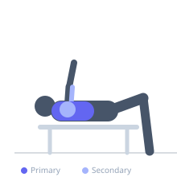

Exercise guide / Multi-Grip / Swiss Bar Bench Press
Multi-Grip / Swiss Bar Bench Press
The Swiss Bar (also called a football bar or multi-grip bar) allows the bench press to be performed with a neutral or angled grip rather than a fully pronated grip. This reduces stress on the wrists, elbows, and shoulder joints while maintaining the pectoral and triceps training stimulus, making it a preferred alternative for lifters with joint pain or shoulder impingement issues.
Primary muscles
pectoralis major sternal
pectoralis major clavicular
Secondary muscles
deltoid anterior
triceps long head
triceps lateral head
Stabilizers
subscapularis
pectoralis minor
Equipment
Power Rack (Squat Cage)
Flat Bench


Starting position
- Load the Swiss bar onto the rack hooks. Lie on the bench and select the neutral or angled grip handles. Grip width approximately shoulder-width.
Setup
- Set the rack hooks at appropriate height for a bench press. The Swiss bar's design places the grip handles facing each other (neutral) or at a slight angle. No adjustments to technique are needed beyond the grip change.
Steps
- Step 1: Unrack the Swiss bar and hold it above the chest.
- Step 2: Lower the bar under control to the chest.
- Step 3: Touch the lower chest and press back to the starting position.
- Step 4: Maintain a neutral wrist position throughout.
Coaching cues
- Palms face each other — keep them facing each other throughout
- Drive the elbows down and in rather than flaring wide
Breathing
- Inhale and brace before lowering. Exhale at the top.
Range of motion
- Full ROM from chest-touch to lockout.
Tempo
- 3-1-1-0
Common mistakes
- Letting the wrists roll or bend during the press
- Using too close a grip handle, which shifts load excessively to the triceps
Safety
- Confirm the Swiss bar is compatible with your rack's hook spacing before use
- Start lighter than your straight bar bench — the neutral grip changes the leverages slightly
Training
- strength: 3–6 reps
- hypertrophy: 6–12 reps
- strength: 3–5 sets
- hypertrophy: 3–4 sets
- Rest: {'strength': 180, 'hypertrophy': 90}